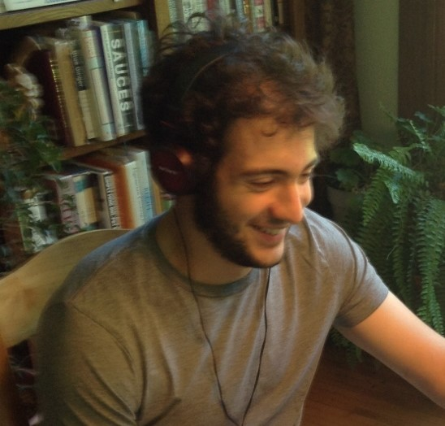
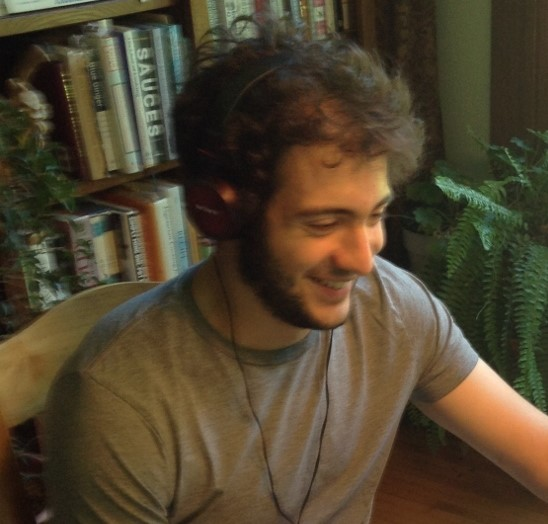

When we see many pictures of the same person, we start acclimating to their humor profile—their overall tendencies around how they express humor, which are particular to them:


 


The more we see someone feeling humor, the more we pick up on their humor profile—ther individual patterns to how they express that humor.
Consider:
In the same way our faces, gaits, fingerprints, and so on are unique, our humor profiles are unique too. Everyone has a specific way of expressing humor that’s particular to them. Our humor profile is part of our identity—it's something that makes us us.